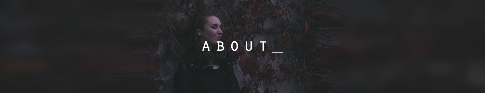

Leah Nonay
</Developer>
Let me introduce myself, my name is Leah, and I am a university student born and raised in Edmonton, Canada, and I am studying to become a software developer. I primarily work with object oriented programming languages, and database developement (SQL) tools. In addition to my studies I am an experienced digital artist as I manage my own freelancing career where I am both a graphic designer and an illustrator.
Digital Media and IT Student, Computer Software Development - NAIT, Edmonton AB